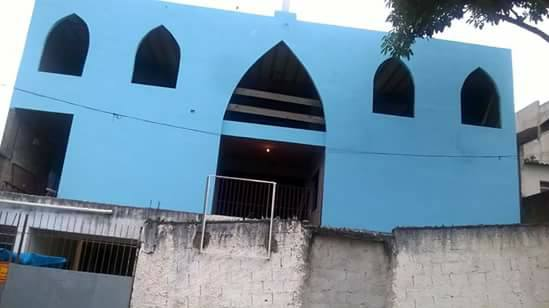
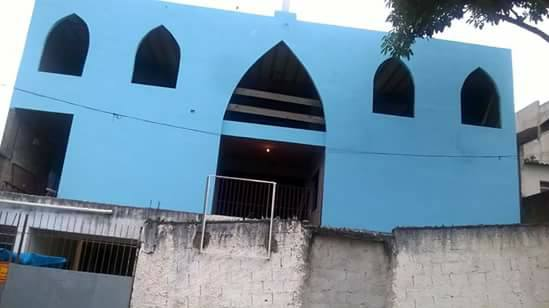

História
Na década de 60, numa praça tomada de muito verde, pobre e com recursos escassos chamado “Vila das Moças Solteiras”, se deu início através das mãos de Madre Domineuc, sua fundadora junto às irmãs franciscanas Tereza, Ângela e Maria, uma pequena capela onde eram desenvolvidas ações sociais, sobretudo às mães solteiras e a evangelização e educação religiosa da população.
Todavia, com o passar do tempo, a estrutura se mostrou insuficiente para suprir a demanda que passou a ser muito maior pois já não acolhia somente pacientes do município, mas também pacientes trazidos de municípios vizinhos, assim, o Amparo Maternal, instituição filantrópica com anos de história em acolhimento social e assistência à saúde materno-infantil que teve como uma de suas fundadoras a Madre Domineuc, distribuiu-às pelos bairros da cidade, dentre eles, o Jardim Sabiá, onde foi adquirido uma área para a construção de 45 casas, a fim de abrigar as mães solteiras com suas crianças desamparadas pelas famílias. A obra teve o apoio do prefeito José Vicente Faria de Lima (1965-1969) e o empenho das irmãs e das mães para que a construção fosse concluída. As obras sociais eram desenvolvidas juntamente a evangelização e educação religiosa da população, dessa forma, elas receberam o apoio do Bispo Dom Evaristo que iniciou celebrações dominicais para as famílias.
Em 1974 sob a consagração de Pe. Pedro foi celebrada a primeira missa, dando-se sequência nos anos seguintes pelos seus respectivos sucessores, que exerciam atividades religiosas na capela que recebeu o nome de “São Vicente de Paulo”, nome acolhido pela comunidade por este ser o nome do sacerdote francês de história edificada na pobreza e pela ação de caridade, um sentimento que se perpetua até os dias atuais com os fiéis e que se integra à frase de São Vicente de Paulo posta na capa deste material histórico.

Em 2004, a capela é assumida pelo Pe. Lício José Neto que, então, assume a missão que lhe foi atribuída de construir uma igreja para o bairro, após 36 anos de existência da capela, com carência na formação pastoral, reeducação religiosa e de estrutura física, foi fortalecida pela união entre o Pe. Lício e os leigos tal responsabilidade. Dentre vários planejamentos e lutas, os sonhos evoluem para realidade, fortalecidos pelo apoio dos fiéis, além de credibilizar as sugestões e contribuições dos mesmos, estes que apresentam uma administração transparente de todo trabalho e investimento pela construção da Igreja de São Vicente de Paulo, no Jardim Sabiá.


Em 12 de outubro de 2007 é demolida a capela e dá-se início a construção da nova igreja que, em sua fase inicial seria um salão para realizar as missas e posteriormente como se encontra atualmente, com as missas sendo realizadas acima do salão, na igreja propriamente construída. Nesse período, as missas eram celebradas na garagem de Edleuza e como é conhecido, Seu Luiz, sua família quem abriu suas portas para acolher a celebração da palavra do Senhor e do seu povo durante o período em que era realizada a obra.
No período entre 2009 e 2010, já sobre a ordenação do Pe. Eudes vivemos o tempo de conquista e graça, pois já podemos visualizar a realidade de um sonho que vinha sendo alcançado com muita perseverança, luta, e, sobretudo fé.
 

Com o fim da construção do salão, as missas passaram a ser realizadas novamente no local de origem, uma conquista enorme para a comunidade como um todo, e, ao mesmo tempo uma nova era de muito esforço coletivo, já que se iniciava ali a luta para a construção da igreja definitiva. Pe. José Paulo foi quem deu sequência ao trabalho do Pe. Eudes, viabilizando junto aos esforços da comunidade o fim das obras estruturais e o começo de suas partes mais complicadas financeiramente. Tendo o período de ordenação do Pe. José Paulo completo, ficou ordenado ao Pe. Cosmo continuar com as obras da igreja até os dias presen
Essa história convida ainda mais o povo de Deus a permanecer confiantes e a assumirem o compromisso em comunidade com a Igreja do Senhor e, sem extinguir o pensamento de São Vicente de: amar à Deus “[...] à custa dos nossos braços” ou “[...] com o suor de nossos rostos”.